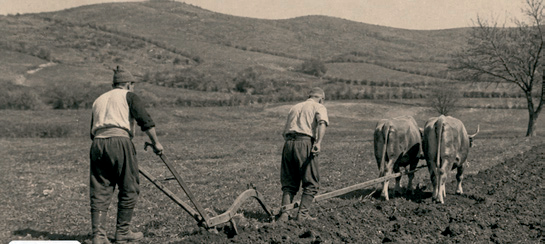
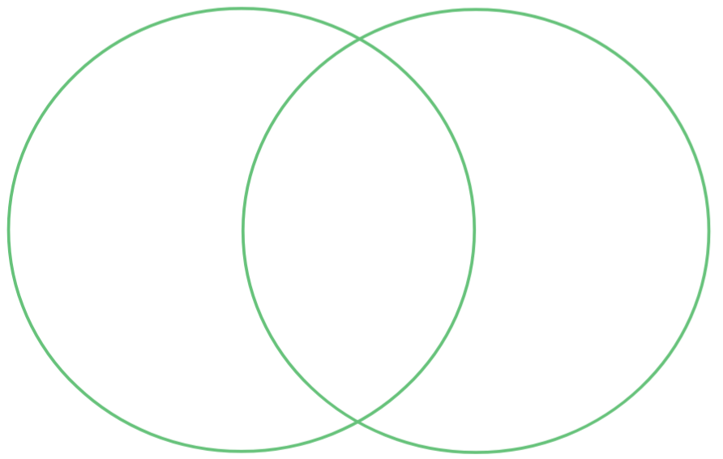

Jeta në Kosovë dikur dhe sot
Fshati dikur dhe sot
1. Vështro fotografitë e dhëna dhe mundohu të bësh krahasimin mes fshatit dikur dhe sot.



1. Vështro fotografitë e dhëna dhe mundohu të bësh krahasimin mes fshatit dikur dhe sot.

